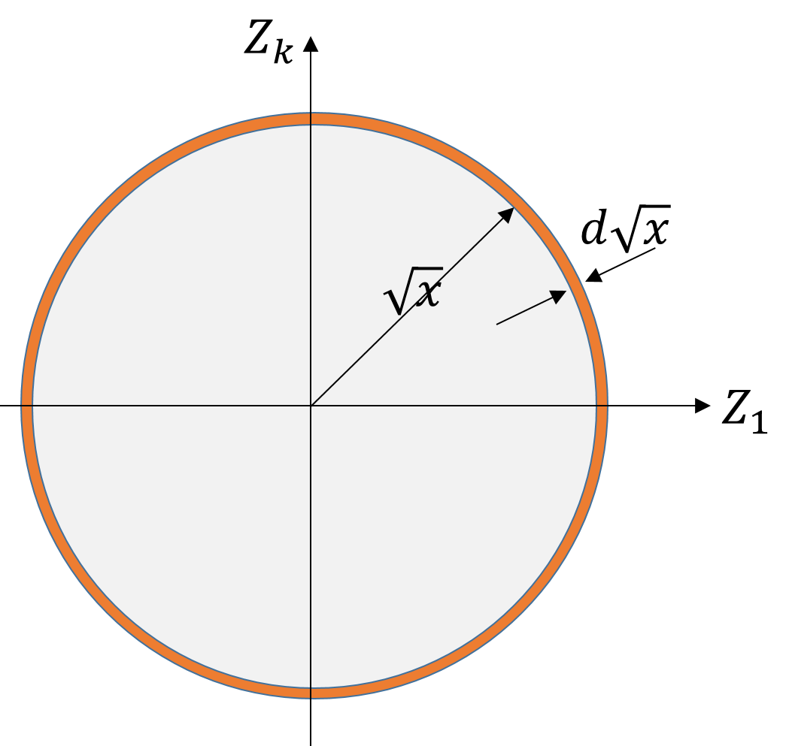

Derivation.
First, notice that the \(n\) variables can be thought as Cartesian axes in an \(n\)-dimensional real space \(\mathbb{R}^n\text{.}\) With this perspective, \(X\) is just the square of the spherical radial coordinate in that space. We will exploit this view point below fully.
The probability of an event for which the value of \(X\) variable is between \(x\) and \(x+dx\) will be
\begin{equation}
P( x \le X \le x + dx ) = \rho_X(x)\, dx.\tag{1.10.4}
\end{equation}
We can find the probability of this event from the joint probability of all the \(Z_i\text{'s}\) also as long as we restricted the \(Z_i\) values to satisfy Eq. (1.10.1).
\begin{equation}
P( x \le X \le x + dx ) = \left[\rho(z_1, z_2, \cdots, z_n)\, dz_1dz_2...dz_n \right]_{x = \sum_i z_i^2}.\tag{1.10.5}
\end{equation}
Now, since the \(Z_i\text{'s}\) are independent variables, joint probability factorizes.
\begin{equation*}
\rho(z_1, z_2, \cdots, z_n) = \rho(z_1)\rho(z_2)...\rho(z_n),
\end{equation*}
where the PDF’s are just standard normal PDF for each. For instance,
\begin{equation*}
\rho(z_1) = \frac{1}{\sqrt{2\pi}}\,e^{-z_1^2/2}.
\end{equation*}
Therefore
\begin{equation*}
\rho(z_1, z_2, \cdots, z_n) = \frac{}{(2\pi)^{n/2}}\,\exp\left( -\frac{z_1^2 + z_2^2 + \cdots + z_n^2}{2} \right) = \frac{1}{(2\pi)^{n/2}}\,e^{-x/2}.
\end{equation*}
Putting this back in Eq. (1.10.5) gives
\begin{equation}
P( x \le X \le x + dx ) = \frac{1}{(2\pi)^{n/2}}\,e^{-x/2}\ \left[dz_1dz_2...dz_n \right]_{x = \sum_i z_i^2}.\tag{1.10.6}
\end{equation}
The quantity in the square bracket restricted to the spherical shell is just the volume of this \(n\)-dimensional spherical shell of radius \(r = \sqrt{x}\) and theickness \(dr = d\sqrt{x}\) since \(x\) is the square of the radius as shown in the figure to the right.
\begin{align*}
dV \amp= \frac{2 \pi^{n/2}\,r^{n-1} }{\Gamma(n/2)} dr \\
\amp = \frac{2 \pi^{n/2}\,x^{(n-1)/2} }{\Gamma(n/2)} \frac{dx}{2\sqrt{x}},
\end{align*}
where \(\Gamma(.)\) is the Gamma/factorial function.

Substituting the volume of the shell in Eq. (1.10.6) we get
\begin{equation*}
P( x \le X \le x + dx ) = \frac{1}{2^{n/2}\Gamma(n/2)}\,x^{\frac{n}{2}-1}\,e^{-x/2}\, dx.
\end{equation*}
Comparing this with what we expected in (1.10.4), we find the PDF of the \(\chi^2\) variable \(X\) to be
\begin{equation}
\rho_X(x; n) = \frac{1}{2^{n/2}\Gamma(n/2)}\,x^{\frac{n}{2}-1}\,e^{-x/2}.\tag{1.10.7}
\end{equation}